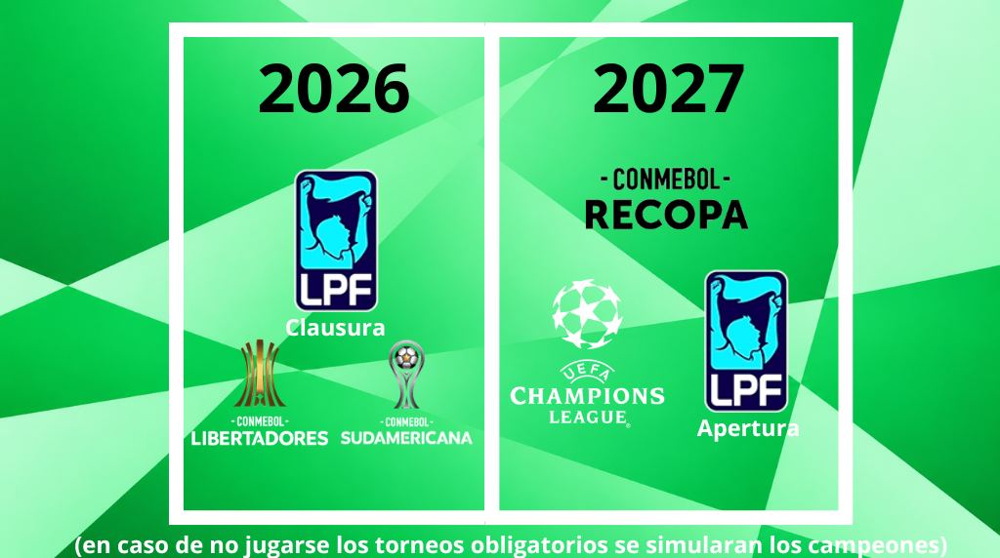

Playoffs – AFA Clausura 2025
Octavos
 Boca [1°A]
Boca [1°A]
 Gimnasia [8°B]
Gimnasia [8°B]
 Independiente [4°B]
Independiente [4°B]
 Belgrano [5°A]
Belgrano [5°A]
 Racing [3°A]
Racing [3°A]
 Vélez [6°B]
Vélez [6°B]
 River [2°B]
River [2°B]
 Newell's [7°A]
Newell's [7°A]
Cuartos
Semifinal
Final
Octavos
 Estudiantes [2°A]
Estudiantes [2°A]
 San Lorenzo [7°B]
San Lorenzo [7°B]
 Talleres [3°B]
Talleres [3°B]
 Argentinos Jrs. [6°A]
Argentinos Jrs. [6°A]
 Huracán [4°A]
Huracán [4°A]
 Rosario Central [5°B]
Rosario Central [5°B]
 Lanús [1°B]
Lanús [1°B]
 Aldosivi [8°A]
Aldosivi [8°A]
Cuartos
Semifinal
CONMEBOL Libertadores 2025
Cuartos
 Universitario
Universitario
 PeñarolEstudiantes
PeñarolEstudiantes
 Botafogo
BotafogoSemifinales
Final
Final – CONMEBOL Sudamericana 2025
 Atlético Mineiro
Atlético MineiroCalendario Oficial

Reglamento Oficial
Consejo de Fútbol – Torneos FC 26
1. Participación mínima
Para disputar un torneo deben estar presentes al menos 3 miembros del Consejo.
Si un miembro está ausente:
- Torneos cortos (se juegan en un día):
Sus equipos se reparten entre los jugadores presentes durante todo el torneo. - Torneos largos (se juegan en varios días):
Sus equipos se reparten de forma rotativa por fecha para poder disputar los partidos.
2. Elección de equipos
Torneos de menor importancia
(Ligas y copas nacionales)
- Se sortea el orden de elección.
- Cada jugador elige un equipo según ese orden.
- En la siguiente ronda el primero pasa a elegir último y el orden sigue rotando.
Torneos importantes
(Libertadores, Champions, Sudamericana y otros torneos internacionales)
- Todos los equipos se asignan por sorteo completamente al azar.
3. Calendario de torneos
Los torneos se disputarán respetando un calendario previamente establecido.
El calendario estará dividido por zonas o etapas, donde se determinarán los torneos disponibles según la temporada del juego en EA Sports FC 26.
4. Finales especiales
Podrán disputarse finales adicionales como:
- Recopa Sudamericana
- Supercopa UEFA
- u otras copas equivalentes
Estas finales enfrentarán:
- al campeón del torneo principal
- al campeón del torneo secundario clasificatorio
Situaciones especiales:
- Si no existe campeón del torneo secundario, la final podrá disputarse entre los jugadores peor clasificados o sin título.
- Si ambos equipos pertenecen al mismo jugador campeón, el título se adjudica automáticamente, aunque el partido podrá ser simulado.
5. Validez de torneos
Solo se considerarán torneos oficiales aquellos jugados en EA Sports FC 26.
6. Transparencia en sorteos
Siempre que sea posible, los sorteos deben realizarse con todos los miembros presentes para evitar dudas o discusiones.